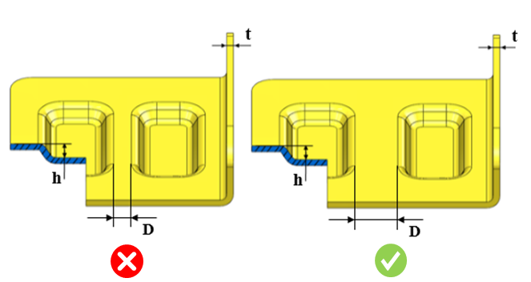

エンボス同士の最小距離は、ユーザーが指定した値に従う必要があります。
エンボス加工は、板金設計における成形工程の一部です。設計時には、せん断や変形を防ぐために、エンボス同士の最小距離を確保する必要があります。
一般に、設計者はこれらの問題を防ぐため、エンボス同士の間に十分な間隔を確保する必要があります。
エンボス間距離と板厚の比は、10.0 以上である必要があります。
板厚に対する距離（エンボス深さを考慮した場合）の比は、ユーザーが指定した値以上である必要があります。
ユーザーは、デフォルトで設定されている値を変更することができます。

ここでは、
t = 板厚
D = エンボス間の距離
h = エンボス深さ
ユーザーは、Import ボタンを使用して、Excel シートテンプレートに含まれる大量のデータをインポートすることができます。
標準テンプレート形式：
h1/t |
h2/t |
D/t |
0 |
10 |
1 |
10 |
25 |
2 |
25 |
|
2.5 |
ここでは、
h1/t および h2/t = エンボス深さと板厚の比の範囲